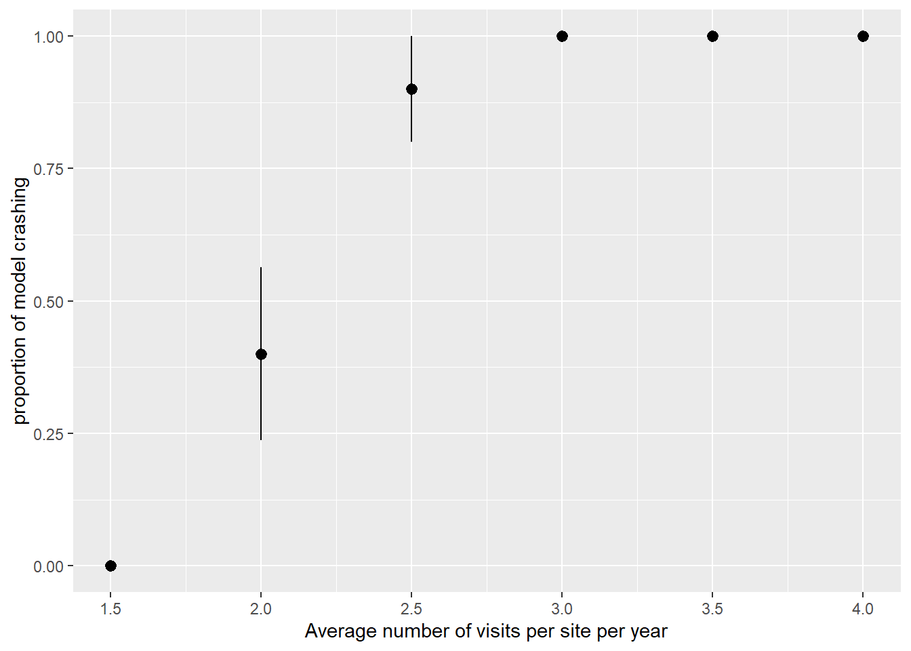

Occupancy models with INLA crash when too many visits per period and sites
Summary
We have coded occupancy models using the very nice available tutorials and they have been working fine so far. However, when using datasets with too many visits per year and site we observe that INLA crash almost systematically. Our large number of visits per year is linked to the fact that we use opportunistic dataset and not standardised surveys. Since repeated visits are key in occupancy models (the more replication, the better the estimation of detection probability), we are currently blocked by the fact models crash when including too many visits. Below you will find a code allowing to reproduce that bug. This code simulate datasets with different levels of replication and assess the likelihood of crashing when running INLA occupancy models.
The occupancy model
The occupancy model we will run here is a very simple model, with just a baseline detection probability in the observation model and a baseline occupancy in the state model.
Here, \(z_{it}\) denotes the occupancy state in site \(i\) for year \(t\). \(\psi_{it}\) is the associated occupancy probability defined on the logit scale as a linear function of an intercept (\(\beta_0\)) and \(\omega\), a spatial Gaussian random field describing the spatial structure in the data.
The response \(y_{ijt}\) is the detection/non-detection data for site \(i\), year \(t\) and visit \(j\), given \(z_{it}\). The detection probabilities \(p\) are defined on the logit scale as a linear function of \(\alpha_0\) (Intercept).
The problem
In our study case we have a maximal number of visits per year and site, K (\(j=1,...,K\)). Let’s imagine our data are aggregated at month level, the maximal number of visits per year and site is \(K=12\). However, since not all sites are monitored every months every year, then the number of realized visits (\(K_{obs}\)) depends on the year and site combination. In our simulations, we varied the average number of realized visits (\(\overline{K}_{obs}\)).
When the average number of realized visits, \(\overline{K}_{obs}\), increased, the probability of the model to crash sharply increased to reach one around \(\overline{K}_{obs} = 3\). Below you will find a code allowing to reproduce that bug.
_
platform x86_64-w64-mingw32
arch x86_64
os mingw32
crt ucrt
system x86_64, mingw32
status
major 4
minor 5.2
year 2025
month 10
day 31
svn rev 88974
language R
version.string R version 4.5.2 (2025-10-31 ucrt)
nickname [Not] Part in a Rumble
packageVersion("INLA")
[1] '26.5.21'
Simulating data
We first define an abitrary spatial domain to simulate data across that domain.
We then define a function to simulate data, according to the basic assumption of our occupancy model (stable occupancy and detectability across time, etc.).
This function has the following arguments:
Parameter
Meaning
nT
number of years
nM
maximal number of repeated visits, let’s say 12 if data are aggregated at month level
prop_sampled
proportion of sites sampled each year
occ_0
initial occupancy probability
trend
growth rate: <1 means declining, 1 means stable, >1 means increasing
det_prob
species detection probability
nrepli
number of independent datasets to generate
nrep_avg
average number of repetited visits (1 repetition means 2 visits in a year per site)
simulate_data=function(nT, nM,prop_sampled, occ_0, trend, det_prob, nrepli, nrep_avg){ det_tab_list=list()for(repli in1:nrepli){ #loop over the number of datasets to generate#yearly average occupancy (if trend) occs <- boot::inv.logit(boot::logit(occ_0)+log(trend)*(0:(nT-1))) #yearly occupancy occs_logit <- boot::logit(occs)#generate species occupancies with spatial autocorrelation distances <-as.matrix(dist(crds(Domain))) cov_mat <-as.matrix(exp(-distances))#generate spatially autocorrelated deviation to the mean: random_field <-mvrnorm(1,mu=rep(0,nr*nc),cov_mat)#generate spatio-temporal occupancy values: occ_tab <-data.frame(cell_id=rep(values(Domain$cell_id),nT),x=rep(crds(Domain)[,1],nT),y=rep(crds(Domain)[,2],nT),proba=boot::inv.logit(random_field +rep(occs_logit, each=nr*nc) -mean(random_field)),year=rep(1:nT,each=nr*nc))#draw real occupancy values: occ_tab$occ <-rbinom(nr*nc*nT,1,occ_tab$proba)#draw species detection det_tab =NULLfor(i in1:nT){ # a loop over years bidon <-subset(occ_tab,year==i) #take only the year we focus on#sample randomly some sites sample_sites <-sample(1:nrow(bidon),round(prop_sampled*nrow(bidon)),replace=FALSE)#take only the sites we focused on bidon <- bidon[sample_sites,] bidon$nrep <-1+rnbinom(length(sample_sites),mu=nrep_avg,size=2) #each sampled site is visited at least once + an undefined number of repetition bidon$nrep[bidon$nrep>=nM]=nM #if number of repetition exceed maximal number of repetition then truncate#replicate each site line for each visit det_tab1 <-do.call("rbind",lapply(1:nrow(bidon),function(x){do.call("rbind",replicate(bidon$nrep[x], bidon[x,],simplify=FALSE))}))#add the ID associated with each visit (not important here but it is in case we include covariates)# if we assume visits have the same probability to be realized (a visit = a month) det_tab1$visit_n=unlist(sapply(bidon$nrep,function(x){sample(1:nM,x,replace=F,prob=rep(1/nM,nM))}))#generate detection det_tab1$detection=det_tab1$occ*rbinom(nrow(det_tab1),1,det_prob)#storing parameters: det_tab1$nrep_avg=nrep_avg det_tab1$repli=repli#combine across years det_tab=rbind(det_tab,det_tab1) } det_tab_list[[repli]]=det_tab }return(det_tab_list)}
We will use that function to simulate several datasets with different number of repeated visits, keeping other parameters fixed:
############## FIXED PARAMETERSnT <-10#number of yearsnM <-12#maximal number of visits, let's say 12 if data are aggregated at month levelprop_sampled <-0.2#proportion of sites sampled each year#species occupancy probabilitiesocc_0 <-0.5#initial occupancy probabilitytrend <-1.0#growth rate: <1 means declining, 1 means stable, >1 means increasing#species detectiondet_prob <-0.2#species detection probabilitynrepli <-10# generate 5 independent datasets perparameter condition############## VARYING PARAMETERnrep_avg_vec=seq(0.5,3,by=0.5) #average number of sampling repetition (1 repetition means 2 sampling events in a year)############## SIMULATING DATAlist_data=lapply(nrep_avg_vec,function(x){simulate_data(nT, nM,prop_sampled, occ_0, trend, det_prob, nrepli, x)})
Since we did not include any covariates for detection, only an intercept, the matrix of detection covariates (X_det) is filled only with 1 and has \(M\) rows and \(K\) columns, where \(M\) is the number of \(sites \times year\) combinations and \(K\) is the number of visits:
max_fd <-function(x){ifelse(length(x)>0,max(x),NA)} #personnalized function, return max if it has element, NA otherwise# a function running INLA occupancy modelsrun_occupancy_model=function(det_tab){setDT(det_tab)#create the big matrix of number of records per sampling events for all species (work with data table to speed up and save memory): matrix_spat <-dcast(det_tab,cell_id+x+y+year~paste0("V",visit_n),value.var="detection",fun.aggregate=max_fd) ncells <-length(matrix_spat$cell_id %>% unique) # number of cells in the whole area# Convert to sf space_data_sf <-vect(unique(matrix_spat[,c("x","y","cell_id")]),geom=c('x','y'),crs="EPSG:4326")########### creat the mesh boundary_sf =st_bbox(space_data_sf) %>%st_as_sfc() %>%st_as_sf() mesh <-fm_mesh_2d(loc.domain =st_coordinates(boundary_sf)[,1:2],max.edge =c(15, 30)) spde <-inla.spde2.pcmatern(mesh = mesh,prior.range =c(100, 0.5),prior.sigma =c(1, 0.5)) t_points <-unique(matrix_spat$year)# unique time points# index set; "spatialfield" is the name used in the model formula iset_sp <-inla.spde.make.index(name ="spatialfield", n.spde = spde$n.spde,n.group =length(t_points))# projection matrix using the coordinates of the data and time index A_sp <-inla.spde.make.A(mesh = mesh,loc =as.matrix(matrix_spat[,c("x","y")]),group = matrix_spat$year) Y_mat <- matrix_spat %>% dplyr::select(num_range("V",sort(unique(det_tab$visit_n)))) %>%as.matrix()#detection covariates in the good format (only one intercept): matrix_spat$intercept=1 X_det <- matrix_spat[,rep("intercept",length(unique(det_tab$visit_n))),with=FALSE] %>%as.matrix()#occupancy covariates X_cov <- matrix_spat %>% dplyr::select(c(year,cell_id)) stk <-inla.stack(data=list(Y = Y_mat, X = X_det),A=list(A_sp,1),effects=list(c(list(Int_occ=1), #the Intercept iset_sp), #the spatial index#the covariatesas.list(X_cov)),tag='spat') formula_spat <-inla.mdata(Y,X) ~-1+ Int_occ +f(spatialfield,model=spde)#running the model with a trycatch to avoid errors breaking the loop obj <-tryCatch({model_spat <-inla(formula_spat, #the formuladata=inla.stack.data(stk), # the data stackfamily='occupancy', # model likelihoodcontrol.predictor=list(A=inla.stack.A(stk),compute=TRUE),control.family =list(control.link =list(model ="logit"),link.simple ="logit"),verbose=F)},error=function(x){return(NA)}) rest <-data.frame(repli=unique(det_tab$repli),nrep_avg=unique(det_tab$nrep_avg),run_success=ifelse(class(obj)=="inla",1,0)) #if model crashed then put 0, if model runs then put 1return(rest)}
We can run the function across all generated datasets. (ART = 25 mn)
Finally, we can calculate the percentage of cases in which the model crashed:
ggplot(data=result_df,aes(x=1+nrep_avg,y=1-run_success))+stat_summary()+ylab("proportion of model crashing")+xlab("Average number of visits per site per year")

What we observe is that occupancy models tend to crash when increasing the number of visits per site and year.